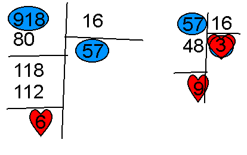
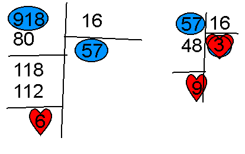

KidpaddleetcieGlin

Description :
Le Blog d'une personne aillant découvert internet en 2007 qui partage une partie de sa vie mais surtout ses réflexions, ses découvertes et ses cours!
Bon, je ne vous garantit pas que 100% du contenu est fiable mais aux moins je l'approuve! :)
N'oubliez pas de me retrouver sur les autres sites internet du réseaux KidpaddleetcieGlin retrouvable dans le premier article de chaque page. ^-^
Bon, je ne vous garantit pas que 100% du contenu est fiable mais aux moins je l'approuve! :)
N'oubliez pas de me retrouver sur les autres sites internet du réseaux KidpaddleetcieGlin retrouvable dans le premier article de chaque page. ^-^
Je bosse actuellement pour la chaîne Grenier des Joueurs


![[ANA JDG] Asterix and the Great Rescue - Megadrive](../vi/6oUXi0ckLmA/default.jpg)
![[ Présentation pour la chaîne Grenier des Joueurs ] JDG Prod](../art/SHAR.6419.583.2.jpg)
Son morceau préféré


Retour au blog de KidpaddleetcieGlin
![[Aide Informatique]Le pokédex en Javascript!](../5252/79895252/pics/3284318692_1_3_6zFjjYC6.png)
Vous connaissez le pokédex? Ce répertoire de Pokémon qui permet de tout savoir sur un Pokémon rencontré ou capturer! Il est possible de créer un mini-pokédex en Javascript!
Maintenant, n'espérer pas trop de ce code car il ne donnera, dû à sa simplicité, qu'une caractéristique sur le Pokémon recherché!
Le code est simple:
<script>
var pokemon = prompt("Quel est votre Pokémon?");
switch (pokemon){
case "Salamèche":
case "Reptincelle":
case "Dracaufeu":
case "Poussifeu":
case "Gallifeu":
case "Brasigali":
alert (pokemon+ " est un Pokémon de type feu !");
break;
case "Carapuce":
case "Carabaffe":
case "Tortank":
case "Gobou":
case "Magicarpe":
alert (pokemon+ " est un Pokémon de type eau !");
break;
default:
alert (pokemon+ " n'est pas répertorié!");
break;
}
</script>
Les "case" servent à enregistrer un "nom de Pokémon" qui va obtenir la réponse de "alert" juste avant le "break;" !
Les lignes où apparaissent "case" doivent se terminer un ":" tandis que les autres lignes se termine souvent avec un ";" !
N'oublier pas de, comme toujours, entourer votre code javascript des balises "<script>" et
"</script>" !
Affectation : =
Opérateur de comparaison : !=
Égalité : ==
Strictement plus petit que : <
Plus petit ou égale : <=
Strictement plus grand : >
Plus grand et égale : >=
Et : &&
Ou : ||
Pas : !
( Plus sur https://fr.wikipedia.org/wiki/Syntaxe_JavaScript )
Opérateur de comparaison : !=
Égalité : ==
Strictement plus petit que : <
Plus petit ou égale : <=
Strictement plus grand : >
Plus grand et égale : >=
Et : &&
Ou : ||
Pas : !
( Plus sur https://fr.wikipedia.org/wiki/Syntaxe_JavaScript )
Pour convertir un nombre en base 10 en base 16, il faut diviser votre nombre décimal autant de fois que possible en 16 pour obtenir des résultats compris entre 1 et F!
Par exemple: 918 (base 10)

918-> 6
57-> 9
3-> 3
Ce qui nous donne "918 (base 10) = 3 9 6 (base 16)" !
La marche à suivre est simple:
918/16 = 57.375
//on ignore les chiffres après la virgule
57/16= 3.5625
57-(3*16)=9
918-(57*16)=6
//Une fois que c'est inférieur ou égale à un, ça veut dire que ce fut l'avant-dernier résultat qui fut le dernier à obtenir
Si on devait faire une formule passe partout:
NOMBRE DE BASE 10/16= NOMBRE OBTENU 1
NOMBRE OBTENU 1/16=VALEUR HEXADÉCIMAL 1
NOMBRE OBTENU 1-(VALEUR HEXADÉCIMAL 1*16)=VALEUR HEXADÉCIMAL 2
NOMBRE DE BASE-(NOMBRE OBTENU 1*16)= VALEUR HEXADÉCIMAL 3
Si vous avez besoin de plus d'aide: http://fr.wikihow.com/convertir-un-nombre-d%C3%A9cimal-en-hexad%C3%A9cimal
Par exemple: 918 (base 10)

918-> 6
57-> 9
3-> 3
Ce qui nous donne "918 (base 10) = 3 9 6 (base 16)" !
La marche à suivre est simple:
918/16 = 57.375
//on ignore les chiffres après la virgule
57/16= 3.5625
57-(3*16)=9
918-(57*16)=6
//Une fois que c'est inférieur ou égale à un, ça veut dire que ce fut l'avant-dernier résultat qui fut le dernier à obtenir
Si on devait faire une formule passe partout:
NOMBRE DE BASE 10/16= NOMBRE OBTENU 1
NOMBRE OBTENU 1/16=VALEUR HEXADÉCIMAL 1
NOMBRE OBTENU 1-(VALEUR HEXADÉCIMAL 1*16)=VALEUR HEXADÉCIMAL 2
NOMBRE DE BASE-(NOMBRE OBTENU 1*16)= VALEUR HEXADÉCIMAL 3
Si vous avez besoin de plus d'aide: http://fr.wikihow.com/convertir-un-nombre-d%C3%A9cimal-en-hexad%C3%A9cimal
Oui, le titre est très grand et peut faire peur mais la technique est assez simple :
1.Commencer par faire des paquets de 4 bits (Donc une succession de 4 chiffres binaire) .
2.Nommer vos paquets à l'aide de ce tableau (toutes les variétés de successions 4 chiffres binaires y sont répertoriés)
![[Aide Informatique]Convertir le Binaire en Hexadécimal pour obtenir un nombre en Décimal(de la base 2 à la base 16 pour la base 10)](../5252/79895252/pics/3283896118_1_2_AMigXdCR.jpg)
3.Convertissez vos résultats en décimal mais cette fois-ci en additionnant le tout !
Par exemple, avec FB3 (base 16)
( F.16^2 ) + ( B.16^1 ) + ( 3.16^0 ) = 15.256 + 11.16 + 3.1 = 3840 + 176 +3
= 4019 (base 10)
Il n'y a pas vraiment de difficulté, il faut juste pigé le principe et prendre le temps de faire le calcul pour éviter des erreurs d'inattention !
Si vous avez la flemme, je vous offre cette page " http://sebastienguillon.com/test/javascript/convertisseur.html ", c'est un convertisseur fait par un certain Sébastien Guillon en 2005 mais qui a été mit à jour en 2016 !
1.Commencer par faire des paquets de 4 bits (Donc une succession de 4 chiffres binaire) .
2.Nommer vos paquets à l'aide de ce tableau (toutes les variétés de successions 4 chiffres binaires y sont répertoriés)
3.Convertissez vos résultats en décimal mais cette fois-ci en additionnant le tout !
Par exemple, avec FB3 (base 16)
( F.16^2 ) + ( B.16^1 ) + ( 3.16^0 ) = 15.256 + 11.16 + 3.1 = 3840 + 176 +3
= 4019 (base 10)
Il n'y a pas vraiment de difficulté, il faut juste pigé le principe et prendre le temps de faire le calcul pour éviter des erreurs d'inattention !
Si vous avez la flemme, je vous offre cette page " http://sebastienguillon.com/test/javascript/convertisseur.html ", c'est un convertisseur fait par un certain Sébastien Guillon en 2005 mais qui a été mit à jour en 2016 !
Pour convertir un nombre décimal en binaire, il faut diviser le nombre décimal par 2 autant de fois qu'il est nécessaire pour avoir 1 tout en notant si il y a reste ou pas!
Si il y a un reste (nombre impaire obtenu), ça résulte à 1.
Si il n'y a pas de reste (nombre pair obtenu), ça résulte à 0.
Par exemple: 24 (base 10)
24 -> 0
12->0
6->0
3->1
1-> 1
Il y a deux 1 car "3/2= 1,5" et "1/2= 0,5" ! (ils sont donc impaires)
Le résultat sera donc "11OOO" (base 2), un nombre binaire en 5 bits!
Si il y a un reste (nombre impaire obtenu), ça résulte à 1.
Si il n'y a pas de reste (nombre pair obtenu), ça résulte à 0.
Par exemple: 24 (base 10)
24 -> 0
12->0
6->0
3->1
1-> 1
Il y a deux 1 car "3/2= 1,5" et "1/2= 0,5" ! (ils sont donc impaires)
Le résultat sera donc "11OOO" (base 2), un nombre binaire en 5 bits!
Le javascript (à ne pas confondre avec le Java) est un langage de programmation qui, contrairement au CSS et HTML, permet le changement dans un code.
Il s'exprime avec des "<...>" qui se nomme "balise".
Il y a trois genre de balise:
<balise> --> balise ouvrante
</balise> --> balise fermante
<balise/> --> balise auto-fermante
Il ne faut pas oublier que le javascript et le HTML sont dépendant de l'un et de l'autre, d'où le fait que le javascript se trouve dans les page internet qui sont rédigés de base en HTML!
Le visuel de base d'un code HTML où va se trouver du javascript prend cette apparence:
------------------------------------------------------------------------------------------------------------------------------------------------------
<!Doctype HTML>
<HTML>
<head>
<Meta charset= "UTF-8">
<title>Nom de la page qui se trouve dans l'onglet et dans l'en-tête de la page</title>
</head>
<body>
<script>
//C'est ici où on va raconter en javascript les actions d'affichage, les calcules, etc sur la page à l'aide de formule tel que "var" ou encore "alert"!
</script>
</body>
</html>
------------------------------------------------------------------------------------------------------------------------------------------------------
N'oublier pas que javascript, contrairement à l'HTML, est sensible à la casse. Ce qui signifie qu'une simple majuscule est une erreur. Tout les codes se font en minuscule excepté les variables suivant le code "var" et les textes entre guillemets et parenthèses!
Le "UTF-8" signifie que les accents dans les textes vont être affiché (si on ne précise pas "UTF-8" les "é" deviendront des "é" par exemple)!
Si vous mettez "//" avant un texte, il sera visible que dans le code et n'influencera pas le bon déroulement de votre code. On s'en sert donc pour mettre des commentaires dans le code afin de mieux comprendre l'effet désiré ou la démarche employée.
Javascript connait les constantes et les fonctions mathématiques simples grâce à des formules tel que "Math.PI" qui permet de faire appelle à pi (3,14...) ou encore "Math.pow" qui permet d'utiliser une puissance de cette manière:
Math.pow (rayon, 2)
qui donne donc la puissance 2 à un rayon, on peut calculer la surface d'un cercle de cette manière:
surface= 2*Math.PI*Math.pow (rayon,2)
Soit: 2Pi*rayon² = 2 x 3,14 x rayon²
N'oublier pas d'annoncer la variable "rayon" en la demandant à l'utilisateur avec le code
var rayon = prompt ("Quel est la longueur de votre rayon?");
Voila, c'est tout pour les bases!
Il s'exprime avec des "<...>" qui se nomme "balise".
Il y a trois genre de balise:
<balise> --> balise ouvrante
</balise> --> balise fermante
<balise/> --> balise auto-fermante
Il ne faut pas oublier que le javascript et le HTML sont dépendant de l'un et de l'autre, d'où le fait que le javascript se trouve dans les page internet qui sont rédigés de base en HTML!
Le visuel de base d'un code HTML où va se trouver du javascript prend cette apparence:
------------------------------------------------------------------------------------------------------------------------------------------------------
<!Doctype HTML>
<HTML>
<head>
<Meta charset= "UTF-8">
<title>Nom de la page qui se trouve dans l'onglet et dans l'en-tête de la page</title>
</head>
<body>
<script>
//C'est ici où on va raconter en javascript les actions d'affichage, les calcules, etc sur la page à l'aide de formule tel que "var" ou encore "alert"!
</script>
</body>
</html>
------------------------------------------------------------------------------------------------------------------------------------------------------
N'oublier pas que javascript, contrairement à l'HTML, est sensible à la casse. Ce qui signifie qu'une simple majuscule est une erreur. Tout les codes se font en minuscule excepté les variables suivant le code "var" et les textes entre guillemets et parenthèses!
Le "UTF-8" signifie que les accents dans les textes vont être affiché (si on ne précise pas "UTF-8" les "é" deviendront des "é" par exemple)!
Si vous mettez "//" avant un texte, il sera visible que dans le code et n'influencera pas le bon déroulement de votre code. On s'en sert donc pour mettre des commentaires dans le code afin de mieux comprendre l'effet désiré ou la démarche employée.
Javascript connait les constantes et les fonctions mathématiques simples grâce à des formules tel que "Math.PI" qui permet de faire appelle à pi (3,14...) ou encore "Math.pow" qui permet d'utiliser une puissance de cette manière:
Math.pow (rayon, 2)
qui donne donc la puissance 2 à un rayon, on peut calculer la surface d'un cercle de cette manière:
surface= 2*Math.PI*Math.pow (rayon,2)
Soit: 2Pi*rayon² = 2 x 3,14 x rayon²
N'oublier pas d'annoncer la variable "rayon" en la demandant à l'utilisateur avec le code
var rayon = prompt ("Quel est la longueur de votre rayon?");
Voila, c'est tout pour les bases!
La solution la plus simple pour convertir le binaire (composé uniquement de 1 et de 0 )
en décimal (composé de 1,2,3,4,5,6,7,8,9 et 0) est la suivante:
Prenons un nombre en binaire comme: 10010011
Nous avons donc:
Premier chiffre: 1
Deuxième chiffre: 0
Troisième chiffre: 0
Quatrième chiffre: 1
Cinquième chiffre: 0
Sixième chiffre: 0
Septième chiffre: 1
Huitième chiffre: 1
(Remarquer ça nous fait un code en 8-bit soit un "Octet" ou un "Byte" !)
Donc on va faire 1x2⁷ + 0x2⁶ + 0x2⁵+ 1x2⁴ +0x2³ + 0x2² + 1x2¹ + 1x2⁰
On simplifie en ne gardant que les "1x" ce qui est égale à
2⁷+ 2⁴ + 2¹ + 2⁰ = 128+16+2+1 = 147
Donc 10010011 (base 2) = 147 (base 10)
La formule est (chiffre binaire)x(nombre de chiffre possible en binaire=2)^(la place dans l'ordre décroissant du code binaire).
On peut employé un abaque des puissances de 2:
![[Aide Informatique]Convertir le Binaire en Décimal (de la base 2 à la base 10)](../5252/79895252/pics/3283585730_1_15_et8i9HkU.png)
Juste pour ajouter un peu plus d'information à votre culture générale, le "bit" (l'unité de mesure en binaire) vient de "binary digit" !
N'oublier pas qu'une chaîne de 8 bit est un Octet et qu'un Mo (MégaOctet) c'est 2^20 en binaire soit 10^6 en décimal ^^
Voici un petit tableau pour mieux comprendre le système des bits:
![[Aide Informatique]Convertir le Binaire en Décimal (de la base 2 à la base 10)](../5252/79895252/pics/3283585730_1_4_HIv6hxWB.jpg)
en décimal (composé de 1,2,3,4,5,6,7,8,9 et 0) est la suivante:
Prenons un nombre en binaire comme: 10010011
Nous avons donc:
Premier chiffre: 1
Deuxième chiffre: 0
Troisième chiffre: 0
Quatrième chiffre: 1
Cinquième chiffre: 0
Sixième chiffre: 0
Septième chiffre: 1
Huitième chiffre: 1
(Remarquer ça nous fait un code en 8-bit soit un "Octet" ou un "Byte" !)
Donc on va faire 1x2⁷ + 0x2⁶ + 0x2⁵+ 1x2⁴ +0x2³ + 0x2² + 1x2¹ + 1x2⁰
On simplifie en ne gardant que les "1x" ce qui est égale à
2⁷+ 2⁴ + 2¹ + 2⁰ = 128+16+2+1 = 147
Donc 10010011 (base 2) = 147 (base 10)
La formule est (chiffre binaire)x(nombre de chiffre possible en binaire=2)^(la place dans l'ordre décroissant du code binaire).
On peut employé un abaque des puissances de 2:
Juste pour ajouter un peu plus d'information à votre culture générale, le "bit" (l'unité de mesure en binaire) vient de "binary digit" !
N'oublier pas qu'une chaîne de 8 bit est un Octet et qu'un Mo (MégaOctet) c'est 2^20 en binaire soit 10^6 en décimal ^^
Voici un petit tableau pour mieux comprendre le système des bits:
Partage